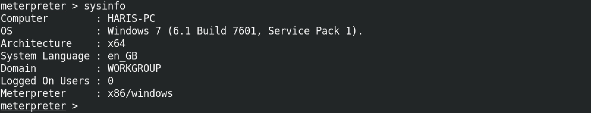

April 9, 2021
Exploit EternalBlue with Custom Exploit - 2
In this tutorial we will see how to gain access to a remote computer using the EternalBlue exploit. EternalBlue exploits a vulnerability in Microsoft's implementation of the Server Message Block (SMB) protocol. This vulnerability is denoted by CVE-2017-0144. The vulnerability exists because the SMB version 1 (SMBv1) server in various versions of Microsoft Windows mishandles specially crafted packets from remote attackers, allowing them to execute arbitrary code on the target computer.
Let's download the exploit from the Exploit Database (exploit-db.com).
Once the exploit is downloaded, let's move it to the current working directory and rename it to eternalblue_exploit.py.
We need mysmb.py for this exploit to work.
This shows the raw mysmb.py script.
Let's download it using wget.
For this exploit to work, we need to generate a reverse shell in the format of an executable. msfvenom is a good choice to perform this task.
This is the original smb_pwn() function in the eternalblue_exploit.py file.
However, we need to modify it by including the path to the generated reverse shell file and then add another line to execute the reverse shell.

The script has the USERNAME set to empty.
In order for the exploit to work, we have to set the USERNAME to guest.
Let's create a Metasploit listener to receive the connection back from the target.
Once the listener is created, we execute the exploit by specifying the IP address of the target.
If the exploit gets executed successfully, we can receive our reverse shell from the target.
Running sysinfo which is a built-in meterpreter command shows system information.
getuid which again is a built-in meterpreter command shows us that we have system level privileges on the box.
- Escalate a Regular Shell to Meterpreter Shell
- Reading Outlook Files in Terminal
- Escalating Privileges with Metasploit's Local Exploit Suggester
- Simple wget PowerShell Script
- PsExec in Linux
- Eternal Blue Exploitation with Metasploit
- Exploit EternalBlue with Custom Exploit - 1
- Exploit EternalBlue with Custom Exploit - 2
- Local Privilege Escalation on Linux Kernel < 4.4.0-116
- Extract Passwords from Firefox Profile
- Escalate Privileges via pip
- Escalate Privileges by Modifying the /etc/passwd File
- wp_admin_shell_upload
- Extract Passwords with LaZagne
- Bruteforce Windows Server SMB Credentials with Medusa
- Brute Force Windows Server SMB Credentials with Hydra
- Brute Force Windows Server SMB Credentials with NCrack
- Brute Force Windows Server SMB Credentials with CrackMapExec
- Brute Force Windows Server SMB Credentials with Metasploit
- Exploit PrintNightmare